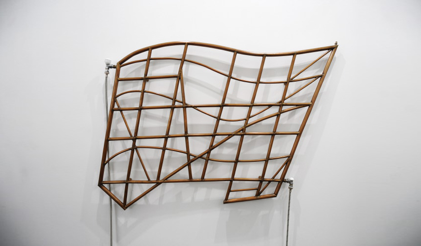

The hybrid object entitled Navigation Chart, based on a traditional Melanesian object, is a radiator that reproduces a maritime chart showing the routes used by the Melanesians in the Pacific. At first considered as a mysterious ritual object, the Melanesian object, mentioned in Georges Perec's "Life: A User's Manual"1, was later revealed to be a very accurate nautical map containing information on everything a sailor needs to know about: wind directions, stars, islands and oceanic depths. Transformed into a radiator, this navigational map alludes to the contradictory desires of exotic adventure and modern comfort. Its mixed status – a map for a Melanesian is a “disorienting” object for us – addresses our relationship to established knowledge and to the prejudices in our relationship with the other. This fake primitive object which is, in fact, a heater opposes the dichotomy between “hot" society and “cold”. The grid also sums up our outlook on the world: a point of view that cannot capture the real in its entirety.
